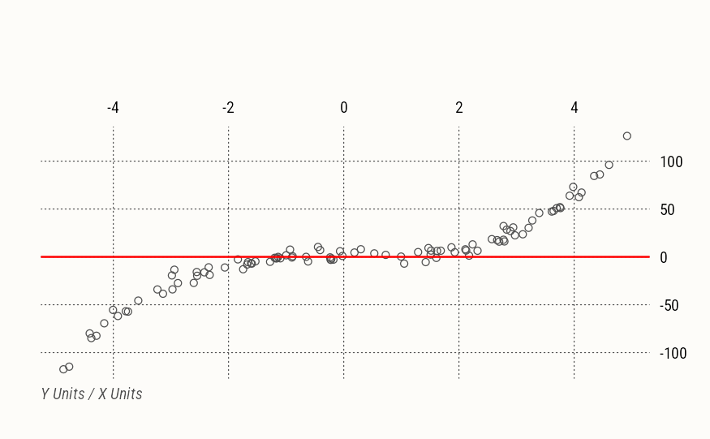
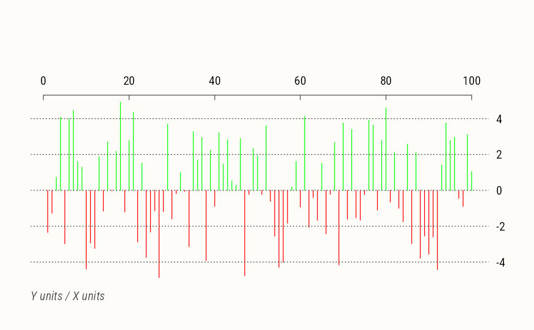
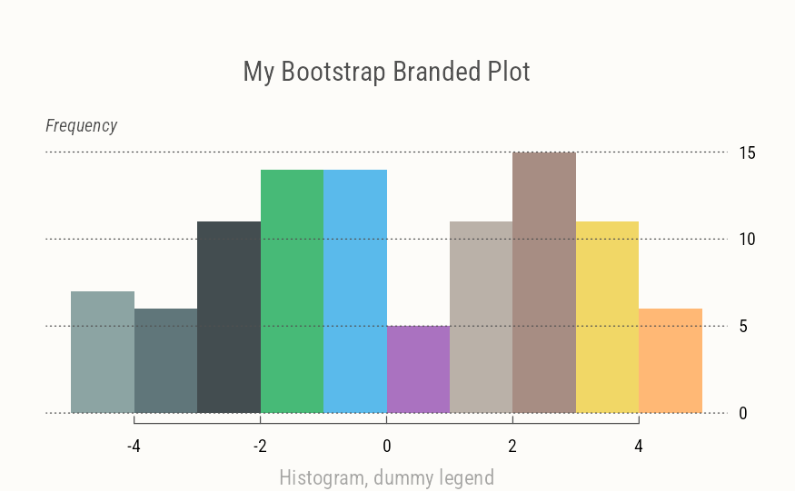

Shorthand function to apply Bootstrap brand to base R plot axes and labels. Many tips derived from r-charts.com, since base R graphic documentation is often lacking.
Arguments
- side
position of axes, up to 4 (1-bottom, 2-left, 3-top, 4-right)
- at
length-2 list of x/y points at which tickmarks are to be drawn, default
list(x=NA, y=NA)- axes.lty
length-2 type of axis line (depends on
nxvalue, c(0,1) if vertical gridlines are drawn) but can be modified here- gap.axis
length-2 minimal gap between axis labels
- line
specifying a value for
lineoverrides the default placement of labels, and places them this many lines outwards from the plot edge.- main
The main title (on top) using font, size (character expansion) and color
par(c("font.main", "cex.main", "col.main")).- sub
Sub-title (at bottom) using font, size and color
par(c("font.sub", "cex.sub", "col.sub")).- xlab
X axis label using font, size and color
par(c("font.lab", "cex.lab", "col.lab")).- ylab
Y axis label, same font attributes as
xlab.- nx, ny
number of cells of the grid in x and y direction. When
NULL, as per default, the grid aligns with the tick marks on the corresponding default axis (i.e., tickmarks as computed byaxTicks). WhenNA, no grid lines are drawn in the corresponding direction.- grid.col
gridline color
- grid.lty
gridline type
- grid.lwd
gridline width
Details
This function has no side effect and does not modify the current device, but it does require at minimum to specifiy par(mar = c(2, 2, 7, 3)) to provide margin space for all plot labels.
Examples
set.seed(1)
x <- runif(100, min = -5, max = 5)
y <- x ^ 3 + rnorm(100, mean = 0, sd = 5)
opar <- par(par.brand())
plot(x, y, axes=FALSE,
main="My Bootstrap Branded Plot", sub="Subtitle")
axes(nx=NULL, xlab="X Units", ylab="Y Units")
abline(h=0, col="red", lwd=2)

plot(x, type="h", col=c("red", "green")[(x > 0) + 1], axes=FALSE,
main="My Bootstrap Branded Plot", sub="Histogram")
axes(xlab="X units", ylab="Y units")

legend_brand(c("Red", "Green"), lty=1, lwd=2, col=c("red", "green"))
#> Error in legend_brand(c("Red", "Green"), lty = 1, lwd = 2, col = c("red", "green")): could not find function "legend_brand"
hist(x, col=pal(), border=NA, axes=FALSE,
main="My Bootstrap Branded Plot", sub="Histogram, dummy legend",
xlab=NA, ylab=NA)
axes(c(1,4), ylab="Frequency")

legend_brand(paste("cat", 1:3), fill=pal(1:3), lty=0)
#> Error in legend_brand(paste("cat", 1:3), fill = pal(1:3), lty = 0): could not find function "legend_brand"
# Restore
par(opar)